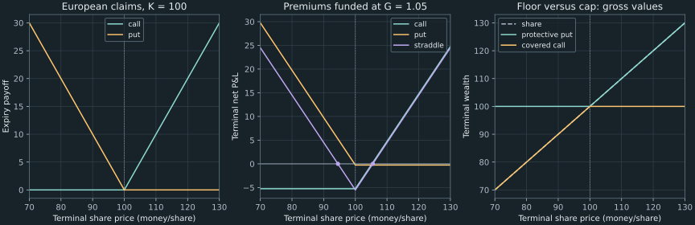

7. Option payoffs and functions
A share costs 100 today. You pay 5 for a European call that allows you to buy one share for 100 in a year. The share finishes at 104. Exercising produces a payoff of 4; financing the premium at 5% leaves a terminal loss of 1.25. The option is in the money, the payoff is positive, and the investment loses money. Those three statements are consistent. Understanding why gives us the vocabulary, mathematical functions, and programming interfaces needed to price options.
The chapter follows the lectures from a contract to its terminal claim, combines claims into investment strategies, and derives a restriction linking call and put prices. The recurring numbers are an original teaching example. They describe one underlying share and one unit of each option, with no implicit exchange contract multiplier. We assume no dividends, no default, and a single common safe funding rate; later sections make the additional trading assumptions explicit.
Source spine: playlist recordings 20, Options, and Functions, 21, Payoffs at Expiration, and 22, Functions in Three Senses. Financing, local proofs, validation contracts, and worked solutions extend the lectures. Executed numbers and strategy checks are in the complete companion.
7.1 A right for the holder, an obligation for the writer Recording 20, 7:17
An option is a contract granting its holder a specified right. A call grants the right to buy an underlying asset at the contract's strike price $K$; a put grants the right to sell it at $K$. The holder may decline to exercise. The writer, who sold the right, must perform the contractual obligation when valid exercise requires it. The premium is the price paid for the option, usually at initiation in our model. Long means holding the option; short means owing its contractual performance. These roles do not switch merely because the market moves.
Specify the underlying, quantity, strike, expiration $T$, exercise style, and settlement convention before computing anything. A European option permits exercise at $T$ only; an American option permits it on or before $T$. The geographic names describe timing rights. They do not specify where a contract trades. These definitions agree with the Options Industry Council's contract and exercise terminology.
A physically settled call holder pays $K$ and receives an asset worth $S_T$ when exercising at expiration. Its net exercise value is $S_T-K$. An idealized cash-settled version pays that positive difference directly. We work with the resulting net terminal value, rather than displaying the two physical settlement legs separately. Settlement mechanics and required liquidity can matter in practice even when this net value agrees.
The lecture's discussion of whether an option is an asset should not be turned into a prohibition: a valuable contractual right can be an asset of its holder. The useful distinction is between the underlying share and a contingent claim written on it. Transferability and collateral eligibility depend on the actual contract and financing arrangements; they are not universal consequences of the word “option.”
Let $S_t$ denote the underlying price at time $t$. A call is in the money when $S_t>K$, at the money when $S_t=K$, and out of the money when $S_t<K$. Reverse the strict inequalities for a put. Moneyness compares underlying and strike. It does not subtract the premium, and for a European option it does not grant permission to exercise before expiration. An out-of-the-money option before $T$ may still have value because its eventual payoff is unresolved.
The hedge direction follows the exposure. A producer planning to sell a commodity worries about a price fall and can buy a put to establish a terminal sale-price floor. A future buyer worries about a price rise and can buy a call to cap the effective purchase price before accounting for its premium. Confusing the holder with the writer reverses the protection. In the recurring call example, $K=100$ and $S_T=104$ make exercise favorable even though the premium makes the whole trade unprofitable.
7.2 An exercise choice produces a kink Recording 21, 0:44
Write $x^+=\max(x,0)$. For a call holder at expiration, exercising when $s=S_T>K$ exchanges $K$ for an asset worth $s$, producing $s-K$. When $s<K$, buying the asset directly is cheaper, so exercising is unnecessary and the option may expire with value zero. At equality the two choices have the same net value. Consequently the European call's terminal payoff function is
\[ c_K(s)=(s-K)^+=\begin{cases}0,&0\leq s\leq K,\\s-K,&s>K.\end{cases}\tag{7.1} \]For a put, exercise allows a sale at $K$ when the asset is worth only $s$. It produces $K-s$ for $s<K$, and there is no positive exercise value for $s\geq K$. Thus
\[ p_K(s)=(K-s)^+=\begin{cases}K-s,&0\leq s<K,\\0,&s\geq K.\end{cases}\tag{7.2} \]Our domain is the set of nonnegative terminal share prices, $[0,\infty)$. The call takes values in $[0,\infty)$, whereas the put's range is $[0,K]$ for $K\geq0$. This domain is an economic assumption about this underlying; it is not a universal restriction on all quantities called commodity prices. Changing the domain can change bounds on losses. A terminal payoff is a known function of an unknown future input. Knowing the function does not reveal the input, its probability law, or today's price of the claim.
For $K>0$, both functions are continuous at the interior point $K$, since both adjoining formulas agree there. The call's left slope is zero and right slope is one. The put's left slope is $-1$ and right slope is zero. Their one-sided derivatives disagree, so neither has a derivative at $K$. Away from $K$, each is affine on its region. Calling the whole function “linear” would lose the exercise choice that creates the corner.
Both payoffs are convex. Here is a proof that does not rely on the drawing. If $a(s)$ and $b(s)$ are affine and $f(s)=\max(a(s),b(s))$, then for $0\leq\theta\leq1$,
\[ \begin{aligned} f(\theta x+(1-\theta)y) &=\max\{\theta a(x)+(1-\theta)a(y),\, \theta b(x)+(1-\theta)b(y)\}\\ &\leq \theta\max\{a(x),b(x)\}+(1-\theta)\max\{a(y),b(y)\}. \end{aligned}\tag{7.3} \]Each candidate inside the maximum is bounded by the right-hand side, which proves the inequality. Take $(a,b)=(s-K,0)$ for the call or $(K-s,0)$ for the put. Convexity expresses the upward change of slope; it does not imply a differentiable payoff, a profitable trade, or a particular pricing formula.
The functions are also 1-Lipschitz: changing the terminal price by an amount cannot change either payoff by more than that amount. For a call and $x\leq y$, both prices below $K$ give difference zero, both above $K$ give difference $y-x$, and a crossing gives $y-K\leq y-x$. Therefore $|c_K(y)-c_K(x)|\leq|y-x|$. For the put, both below $K$ give absolute difference $y-x$, both above give zero, and a crossing gives $K-x\leq y-x$. This bounds sensitivity of payoff evaluation to an input error. It does not by itself bound the sensitivity of today's option price to an estimated volatility.
A numerical derivative can conceal the kink. At $K=100$, for every positive $h<100$,
\[ \frac{c_{100}(100+h)-c_{100}(100-h)}{2h}=\frac{h-0}{2h}=\tfrac12.\tag{7.4} \]The centered quotient stays at one half instead of converging to either one-sided slope. The companion evaluates $h=1,0.1,0.01$ and obtains one half up to floating-point rounding. A stable-looking quotient is not evidence that a derivative exists. At the boundary case $K=0$, the call is simply $s$ on our domain and the put is zero; the interior-kink statement no longer applies.
7.3 Put cash flows on the same date Recording 21, 6:59
Let $v_0$ be the option premium paid at time zero, $f(S_T)$ its terminal payoff, and $G>0$ the certain growth factor from zero to $T$. Investing one unit today produces $G$ at expiration, and a loan of one unit today requires repayment $G$. A fully financed long position therefore has terminal net profit and loss, abbreviated P&L,
\[ \Pi_T^{\rm long}=f(S_T)-Gv_0.\tag{7.5} \]Equivalently, an investor using personal capital compares the payoff with the alternative safe terminal wealth $Gv_0$. The textbook diagram $f(S_T)-v_0$ explicitly ignores financing or assumes $G=1$. It is useful under that convention, but it combines dated cash flows unless the convention is stated. Here $T$ is one year and the annual effective safe rate is $i=0.05$, so $G=1+i=1.05$ and discount factor $D(0,T)=1/G$. A continuously compounded rate would instead give $G=e^{rT}$.
For the quoted call premium $C_0=5$, funding costs 5.25 at $T$. At $S_T=104$, exercise gives 4, and terminal P&L is $4-5.25=-1.25$. Ignoring funding would give $4-5=-1$. The funded break-even is $K+GC_0=105.25$, whereas the strike separating exercise regions remains 100. The following small table keeps these quantities separate.
| $S_T$ | Call payoff | Funded long-call P&L | Funded writer P&L |
|---|---|---|---|
| 80 | 0 | −5.25 | 5.25 |
| 100 | 0 | −5.25 | 5.25 |
| 104 | 4 | −1.25 | 1.25 |
| 105.25 | 5.25 | 0 | 0 |
| 120 | 20 | 14.75 | −14.75 |
The writer receives $v_0$ initially and owes $f(S_T)$, so investing the receipt at the same rate gives $\Pi_T^{\rm short}=Gv_0-f(S_T)=-\Pi_T^{\rm long}$. The equality assumes identical funding and no transaction or collateral costs. It is an accounting identity in this model, not a claim that real counterparties face identical financing terms.
A long call can lose its entire funded premium but has unbounded upside when $S_T$ is unbounded above. The corresponding uncovered writer has no finite lower P&L bound. Since $0\leq p_K(S_T)\leq K$ on our domain, a put writer's worst funded P&L is $GP_0-K$, attained at $S_T=0$. “Limited” can still mean a large loss. These conclusions concern positions held to expiration; interim margin demands, closing trades, and default are outside this simple terminal model.
7.4 A floor, a cap, and a bet on movement Recording 22, 4:49
Owning $a$ units of claim $f$ and $b$ units of claim $g$ produces $af(s)+bg(s)$ in state $s$. Negative quantities represent obligations. This arithmetic remains linear in the holdings even when the individual claims are nonlinear functions of the underlying. The option kink does not abolish portfolio addition or the possibility of linear pricing across replicable claims.
A long straddle combines a call and put with the same strike, expiration, and underlying quantity. For $s\geq K$, only the call pays; for $s\leq K$, only the put pays. Hence
\[ c_K(s)+p_K(s)=|s-K|.\tag{7.6} \]The V shape rewards distance from the strike at expiration in either direction. It does not guarantee profit after premiums. For numerical comparison, take the put premium $P_0=5/21\approx0.238095238$ that parity will imply in the next section. The combined premium is approximately 5.238095238; its terminal funding cost is 5.5. The straddle P&L is $|s-100|-5.5$, with break-even prices 94.5 and 105.5. A final price of 104 entails a loss of 1.5 despite a positive payoff of 4. Anticipated movement can already be expensive in the option premiums; the payoff graph alone is not a forecast of investment performance.
A protective put combines one share and one long put. Below $K$, the put adds $K-s$ to a share worth $s$; above $K$, the put expires and the share remains. Therefore
\[ s+p_K(s)=\max(s,K).\tag{7.7} \]This is a floor, not a V shape. The lecture dialogue corrects an initial confusion about which side of the put is held; the long-put formulation is also the OIC protective-put definition. In our newly purchased package, the initial cost is approximately 100.238095238 and its funded terminal cost is 105.25. Terminal gross wealth is at least 100, so funded P&L is at least $100-105.25=-5.25$. Protecting a minimum sale value has a price; it does not guarantee nonnegative profit. Above 100, upside remains, with funded break-even 105.25.
A covered call combines one share with one short call. Above $K$, the call obligation takes away $s-K$, leaving $K$; below $K$, it takes nothing. Thus
\[ s-c_K(s)=\min(s,K).\tag{7.8} \]The initial net cost is $S_0-C_0=95$, with terminal funding cost 99.75. P&L is $\min(s,100)-99.75$. It reaches its maximum 0.25 for $s\geq100$, but falls to $-99.75$ at zero. The premium provides a cushion relative to buying the share at 100; it supplies no positive terminal wealth floor. The OIC covered-call explanation likewise identifies the retained downside and surrendered upside. Here “covered” refers to having the share needed to meet the call obligation, not eliminating the stock exposure.
| Position | Terminal wealth at $s=80$ | Funded P&L at 80 | Terminal wealth at $s=120$ | Funded P&L at 120 |
|---|---|---|---|---|
| Long straddle | 20 | 14.5 | 20 | 14.5 |
| Protective put | 100 | −5.25 | 120 | 14.75 |
| Covered call | 80 | −19.75 | 100 | 0.25 |

The payoff identities are valid state by state; they need no probability model. Valuing the original and combined positions consistently requires a separate economic argument. That is the role of no-arbitrage replication.
7.5 Identical terminal claims must have identical initial costs Recording 22, 13:23
Compare package A, one share plus one European put, with package B, one European call plus a certain payment $K$ at $T$. The latter payment is supplied by purchasing a zero-coupon bond for $KD(0,T)$. Equations (7.1)–(7.2) imply
\[ s+p_K(s)=c_K(s)+K=\max(s,K)\qquad\hbox{for every }s\geq0.\tag{7.9} \]To turn this equality of terminal payoffs into an equality of prices, assume the options have identical underlying units, strike, and expiration; the share pays no intervening dividend or other distribution; obligations are honored; all legs can be bought or sold short in matching amounts; and borrowing and lending use the same certain growth factor $G=1/D(0,T)>0$. Ignore trading, tax, stock-borrow, and collateral costs. There are no intermediate contractual cash flows in these European packages. These assumptions allow the same terminal payment to offset the same obligation without an unmodeled cash-flow gap.
If A cost less than B, buy A and short B simultaneously. The positive initial difference can be invested safely. Their terminal claims cancel by (7.9), leaving the invested difference as a strictly positive certain terminal surplus. If B cost less, reverse the trade. Thus absence of such arbitrage forces put–call parity:
\[ S_0+P_0=C_0+KD(0,T),\qquad C_0-P_0=S_0-KD(0,T).\tag{7.10} \]This proof compares attainable payoffs rather than estimating how likely a high price is. The OIC parity discussion supplies the corresponding discounted-strike formula and identifies borrowing, short-selling, transaction-cost, and dividend qualifications. We retain the European exercise restriction for the exact equality proved here; early-exercise rights require additional analysis.
In the running one-year example, $KD=100/1.05=2000/21\approx95.238095238$. Given the hypothetical call quote of 5, parity implies
\[ P_0=5-100+100/1.05=5/21\approx0.238095238.\tag{7.11} \]This determines a put price conditional on a call price. It has not established that the call is worth 5 under any particular future-price model. Indeed, increasing both call and put prices by the same amount preserves parity; independent price bounds may limit that amount, but the equality alone leaves one degree of freedom.
For a concrete violation, suppose the put were quoted at 1 while the other example prices stayed fixed. A costs 101; B costs approximately 100.238095238. Sell A and buy B. The complete incremental cash-flow account is:
| Leg | Time-zero receipt | Terminal receipt |
|---|---|---|
| Short one share | $+100$ | $-s$ |
| Write one put | $+1$ | $-p_{100}(s)$ |
| Buy one call | $-5$ | $+c_{100}(s)$ |
| Buy bond paying 100 | $-100/1.05$ | $+100$ |
| Sum before investing credit | $16/21\approx0.761904762$ | $0$ in every state |
Investing the initial credit converts the whole strategy into zero initial net outlay and terminal surplus $(16/21)(1.05)=0.8$. The terminal cancellation holds at 80, 100, 120, and every other allowed price. A real trading opportunity would require executable prices and the stated financing and shorting access; substituting midquotes into the table does not establish that access.
The same logic gives useful price bounds. If two attainable claims satisfy $f(s)\leq g(s)$ in every state but $f$ costs more today, selling $f$ and buying $g$ generates an initial credit and a nonnegative terminal claim. No-arbitrage therefore preserves this ordering. Since $0\leq c_K(s)\leq s$ and $0\leq p_K(s)\leq K$, nonnegative prices and upper bounds follow. Parity and nonnegativity give the remaining lower bounds:
\[ \max(0,S_0-KD)\leq C_0\leq S_0,\qquad \max(0,KD-S_0)\leq P_0\leq KD.\tag{7.12} \]All comparisons use identical settlement dates and the same no-dividend trading model. For example, the lower call bound is $S_0-KD$, not automatically $S_0-K$: postponing the strike payment has value when interest is positive. The call quote 5 and the implied put in (7.11) satisfy these necessary bounds, but necessary bounds and parity are not a complete stochastic pricing model. The next chapter adds a specified two-state market in which a replicating portfolio determines an individual option price.
7.6 One mathematical claim, three views of a function Recording 22, 0:45
The first view is a named computational procedure. A function packages a calculation behind an interface: inputs, output, assumptions, and failures. Calling a bond pricer at several yields should reuse one implementation, rather than copy its discount loop. A useful interface also tells the caller whether a rate is annual effective or continuously compounded, which cash-flow dates are allowed, and whether shape mismatches are rejected. A short function name alone does not supply that contract.
The second view is the mathematical map studied above: $c_K:[0,\infty)\to[0,\infty)$. Its definition covers every allowed input, including prices we have not yet observed. Its graph, convexity, and kink can be reasoned about without running a program. The notation $c_K(120)=20$ is one evaluation; $c_K$ is the whole map. A finite plot samples the map and cannot, by itself, prove an identity on the entire domain.
The third view treats a function as a value in a programming language. Store it in a variable, pass it to another function, or return it from a function. This lets a grid evaluator accept “what payoff?” separately from “which terminal prices?” The following complete miniature illustrates the separation on validated finite nonnegative inputs. The full companion adds the explicit rejection rules discussed below.
def call_factory(strike):
def payoff(terminal):
return max(terminal - strike, 0.0)
return payoff
def put_factory(strike):
def payoff(terminal):
return max(strike - terminal, 0.0)
return payoff
def apply_to_grid(payoff, grid):
return [payoff(terminal) for terminal in grid]
call = call_factory(100.0)
put = put_factory(100.0)
grid = [80.0, 100.0, 120.0]
print(apply_to_grid(call, grid))
print(apply_to_grid(put, grid))
print(apply_to_grid(lambda s: call(s) + put(s), grid))
assert apply_to_grid(call, grid) == [0.0, 0.0, 20.0]
assert apply_to_grid(put, grid) == [20.0, 0.0, 0.0]
assert apply_to_grid(lambda s: call(s) + put(s), grid) == [20.0, 0.0, 20.0]
call_factory(100.0) returns a function whose enclosing scope retains the strike. Such a function with its retained environment is a closure. The returned callable takes just the unresolved terminal price. In contrast, call(120.0) invokes that callable and returns a number. Passing call to the evaluator passes the rule; passing call(120.0) would pass 20 instead. The Python 3.13 function tutorial explains function objects, local and enclosing scopes, and returned inner functions.
R permits the same separation. The illustration below uses force(K) to fix the factory argument before returning its inner function, rather than leaving a delayed argument expression to be evaluated after its external inputs change. The R function definition reference describes closures and their enclosing environments. This R illustration is documented, not a claim of R execution in the validation record.
call_factory <- function(K) {
force(K)
function(s) max(s - K, 0)
}
call <- call_factory(100)
grid <- c(80, 100, 120)
vapply(grid, call, numeric(1))
# Expected values from the payoff definition: 0, 0, 20
The companion's vanilla(kind, strike) accepts a finite nonnegative real scalar strike and returns a scalar call or put payoff. Each invocation validates the terminal price. It rejects negative prices, booleans, nonfinite values, and nonscalar inputs rather than clipping or broadcasting them. apply_to_grid accepts a one-dimensional grid, preserves its order, and requires the callback to return one finite real number per input. It permits signed outputs, since a writer or a portfolio may owe money. It rejects a two-dimensional input and a callback returning a list or a nonfinite value. These checks guard an interface; they do not determine whether a chosen financial model is economically adequate.
For $m$ prices and a constant-time scalar payoff, evaluation takes $O(m)$ time and stores $O(m)$ outputs. This implementation also materializes validated input points, so its working storage is $O(m)$. Calling a payoff repeatedly is not a pricing algorithm: no probabilities, discounting weights, or dynamic hedge have yet entered the grid evaluator. In Chapter 8, a pricing engine will take a payoff callback as one input and a specified market model as the others. Reusing the interface then prevents a separate tree algorithm from being copied for every claim.
7.7 What this terminal model leaves open Recording 21, 11:23
Replication and probabilistic pricing are not automatically competing principles. Replication asks for an attainable portfolio matching a claim in every modeled state. A suitable probabilistic representation can encode the same prices through discounted expectations under specially constructed pricing weights. Those weights need not equal physical probabilities describing how often an outcome occurs. We have not yet constructed them, so replacing an unknown premium by a discounted ordinary forecast would insert an unsupported assumption.
Distributions from the share break the simple equality of intermediate cash flows in the parity packages. American exercise introduces a stopping decision and can create cash flows before $T$. Different borrowing and lending rates, bid–ask spreads, position restrictions, stock-borrow fees, and collateral demands can prevent the exact long/short trades used in the proof. Changing those ingredients changes the theorem's market model; it does not change the pointwise algebra of European expiry functions. Settlement quantity must also be kept explicit: exchange contracts can represent many underlying units, but the chapter's arithmetic is per one unit.
The next step is deliberately small: specify two possible terminal stock prices, then solve for stock and bond holdings matching a call in both states. That exercise will price a particular claim, identify a no-arbitrage condition on the two-state market, and explain why a discounted expectation can emerge without forecasting the stock's true probability of rising.
7.8 Exercises with worked solutions
Use the chapter's one-share, no-dividend European setting and its common funding factor unless a question changes an assumption. State which cash-flow date a number refers to.
Exercise 7.1: rights, quantity, and moneyness
A producer will sell one unit of an underlying asset at $T$ and wants a floor of 100 before premium costs. Which right should the producer buy? At a terminal price of 80, identify the option payoff and the combined sale proceeds. Explain why buying a call instead would not supply that floor.
Worked solution
Buy a put granting the right to sell one unit at 100. At 80, its payoff is $100-80=20$, so underlying sale proceeds plus put payoff total $80+20=100$. At a price above 100, the put pays zero but the producer sells at that higher price. The combined gross proceeds are therefore $\max(S_T,100)$. A call at strike 100 pays zero at 80 and leaves proceeds of 80, so it does not hedge the producer's price fall. The premium and its funding must still be deducted to obtain net economic proceeds. All calculations are for one unit; multiplying by a contract quantity is a separate operation.
Exercise 7.2: a plausible numerical derivative
For $c_{100}$, compute the left, right, and centered difference quotients at 100 with positive step $h<100$. Does the centered quotient establish differentiability? Show that the straddle's payoff is 1-Lipschitz even though adding two separate Lipschitz bounds only gives a bound of two.
Worked solution
The left quotient $[c(100)-c(100-h)]/h$ is zero. The right quotient $[c(100+h)-c(100)]/h$ is one. The centered quotient is $[h-0]/(2h)=1/2$. Since the one-sided limits differ, no derivative exists at the strike; the centered result averages across the corner. For the straddle, use its exact form $a(s)=|s-100|$. The triangle inequality gives $|x-100|\leq|x-y|+|y-100|$ and the reversed inequality with $x,y$ exchanged. Together these imply $|a(x)-a(y)|\leq|x-y|$. The sum-of-bounds argument is valid but not sharp because call and put slopes do not simultaneously contribute in the same direction.
Exercise 7.3: an in-the-money loss
At $S_T=104$, compute the running call holder's payoff, funded P&L, and writer's funded P&L. Find the holder's funded break-even. What is the greatest possible funded loss for the long put with parity-implied premium $5/21$?
Worked solution
The call payoff is $(104-100)^+=4$. Its premium of 5 grows to 5.25 at $T$, so the holder's funded P&L is $4-5.25=-1.25$. The writer receives and invests the premium and pays the claim, giving $5.25-4=1.25$. A call is in the money whenever $S_T>100$, but its funded break-even solves $S_T-100=5.25$, so it is 105.25. The put's premium grows to $(5/21)(1.05)=0.25$; its smallest payoff is zero for $S_T\geq100$. Its greatest funded loss is therefore 0.25. Neither positive intrinsic value nor limited loss implies a positive expected profit.
Exercise 7.4: read the whole strategy
Compare the straddle, protective put, and covered call at terminal prices 80 and 120. Which package guarantees gross wealth of at least 100? Which guarantees nonnegative funded P&L? Find the straddle's funded break-even prices.
Worked solution
The straddle pays 20 in either state and costs 5.5 after funding, giving 14.5 P&L in either. The protective put pays 100 at 80 and 120 at 120; subtracting 105.25 gives $-5.25$ and 14.75. The covered call pays 80 at 80 and 100 at 120; subtracting 99.75 gives $-19.75$ and 0.25. Only the protective put supplies a gross floor of 100. None of these packages guarantees nonnegative funded P&L across all prices: the straddle loses 5.5 at 100, the protective package loses 5.25 below or at 100, and the covered package loses 99.75 at zero. Solving $|S_T-100|=5.5$ gives straddle break-evens 94.5 and 105.5. Both fall within the assumed nonnegative domain.
Exercise 7.5: a parity quote is too high
Keep $S_0=K=100$, $G=1.05$, and $C_0=5$, but quote the put at 1. Construct a zero-initial-outlay arbitrage under the stated frictionless assumptions. Why does merely observing this quoted difference in a data feed not prove a tradable arbitrage?
Worked solution
The share-plus-put package costs 101. The call-plus-strike-bond package costs $5+100/1.05$, approximately 100.238095238. Short the first and buy the second, obtaining credit $16/21$, approximately 0.761904762. Invest that credit, which makes total initial net outlay zero. At expiration, the trading packages sum to $-S_T-p_{100}(S_T)+c_{100}(S_T)+100=0$ by (7.9); the credit investment adds 0.8 in every state. The construction requires simultaneous executable buy/sell prices, share borrowing, reinvestment of proceeds, and matched funding and settlement. Midquotes, stale timestamps, costs, or short-sale restrictions can invalidate the proposed executable trade without invalidating the algebra.
Exercise 7.6: pass the rule, not a previously computed number
A grid evaluator accepts a scalar callback. Explain the difference between passing call and call(120). Give its outputs for a call, put, and straddle on $[80,100,120]$. Should it reject a callback returning a negative number? Should it accept a list-valued output or silently clip a negative terminal price?
Worked solution
call is a function object that can be evaluated at each grid point. call(120) is the number 20 for this strike and does not specify how payoff changes with the input. The three output lists are $[0,0,20]$, $[20,0,0]$, and $[20,0,20]$. A negative scalar output can be legitimate for a writer or a signed portfolio, so the generic evaluator should permit it. A list-valued output violates the declared one-real-number-per-price contract. A negative terminal price lies outside this chapter's stock domain and should be rejected, rather than transformed into an economically different input by clipping. Empty one-dimensional grids may return empty outputs because no evaluation is requested; this is distinct from a wrongly shaped grid.
Primary sources and reproducibility
The lecture links beside sections identify the source spine. Their machine transcripts sometimes interchange payoff and profit or confuse the put holder with its writer; the definitions, dated accounts, and identities above supply explicit corrections. The proofs, numerical case, rejection contracts, and exercises are original elaborations.
- OIC, Basics: holder/writer, call/put rights, and exercise-style definitions.
- OIC, Protective Put and Covered Call: which option position accompanies the share.
- OIC, Put/Call Parity: discounted-strike relation and trading qualifications. This chapter proves its stated European, no-dividend version directly.
- Python 3.13 tutorial, Defining Functions and Lambda Expressions: function objects, scopes, returned functions, and callbacks.
- R, Function Definition and Force Evaluation of an Argument: closure environments and the factory's explicit argument evaluation.
Run python code/ch07_payoff_functions.py for the computed cash-flow tables, parity cancellation, convexity spot checks, finite-difference values, and validation failures. The local proofs establish the continuum statements; sampled checks do not replace them. The embedded Python miniature is executed separately. Figure regeneration uses python figures/ch07_payoff_geometry.py with the pinned numerical and plotting dependencies in requirements.txt. R code is an illustrative counterpart whose language semantics were checked from official documentation; no R runtime result is claimed.